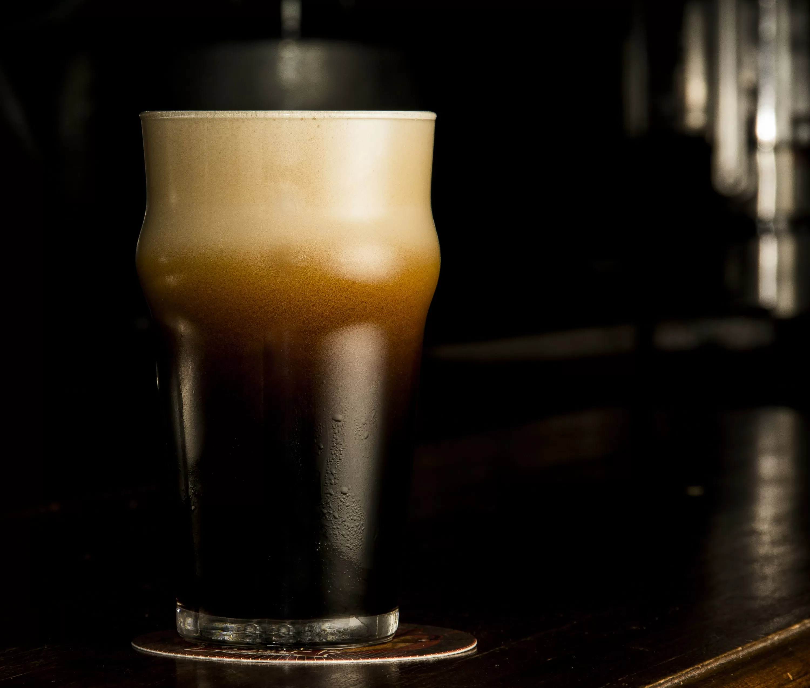

Nuestras cervezas
Ipa de la casa
>alc= 5.9% - Ibu= 48
La especialidad más lupulada de la familia. Nuestra Session IPA, es una cerveza sin filtrar elaborada con tres lúpulos que le otorgan características que la hacen única: un aroma frutal, ciertos toques cítricos y un amargor más pronunciado.

Ipa de la casa
>alc= 5.9% - Ibu= 48
La especialidad más lupulada de la familia. Nuestra Session IPA, es una cerveza sin filtrar elaborada con tres lúpulos que le otorgan características que la hacen única: un aroma frutal, ciertos toques cítricos y un amargor más pronunciado.
Super Bock
>alc= 8.0% - Ibu= 38
La primera cerveza negra de la familia posee una cuidadosa selección de maltas que aportan un abanico de aromas, donde destacan recuerdos a café y chocolate. En boca un sabor tostado y ahumado de fondo.
Kölsch
alc= 4.9% - Ibu=32
Kölsch es una especialidad local de cerveza elaborada en Colonia (Alemania) con levaduras Ale, a diferencia de las cervezas características de la región que son fermentadas con levaduras Lager.